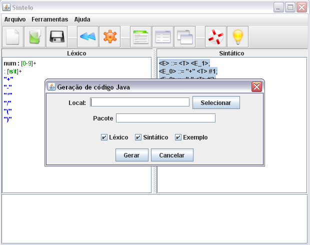

Voltar Índice
Voltar Índice
GERAÇÃO DO CÓDIGO FONTE
O usuário poderá gerar o código fonte dos analisadores em java. Para gerar o usuário poderá optar em gerar o analisador léxico e sintático separados ou juntos, e terá a oportunidade de gerar exemplos para os possíveis testes.

O usuário deverá localizar onde quer salvar o pacote que será gerado, definir o nome do pacote e qual dos analisadores deseja gerar, léxico, sintático, ou os dois, e o exemplo que só será gerado se os dois analisadores forem gerados.